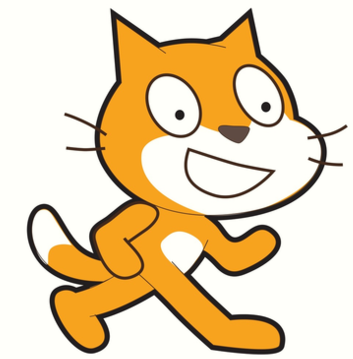

| Naszym aktualnym konkursem jest konkurs na grę platformową w języku Scratch. Scratch to prosty bloczkowy język łatwy do nauczenia się. Uczestnicy mają za zadanie stworzyć grę z minimalną ilością 3 poziomów, licznik żyć, przeciwnikami oraz system poruszania się. Tematyka gry jest dowolna i zalecane jest wykorzystanie autorskich grafik. | |
|  | |
| Nagroda za pierwsze miejsce to książka do nauki C++ by kontynuować naukę programowania w języku trochę bardziej złożonym. |